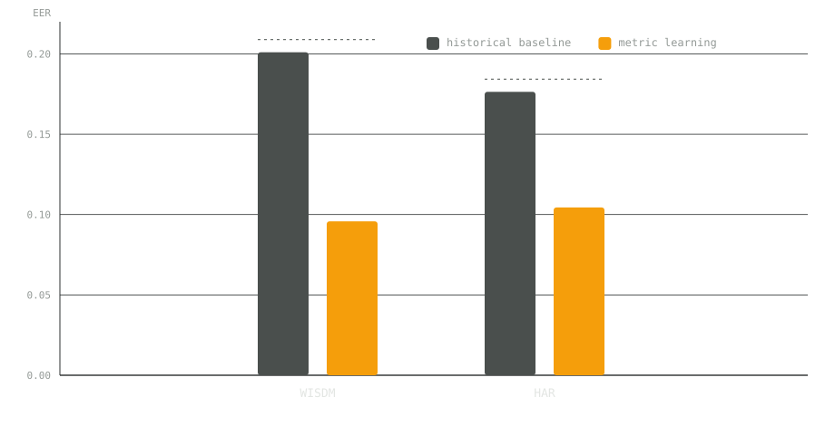
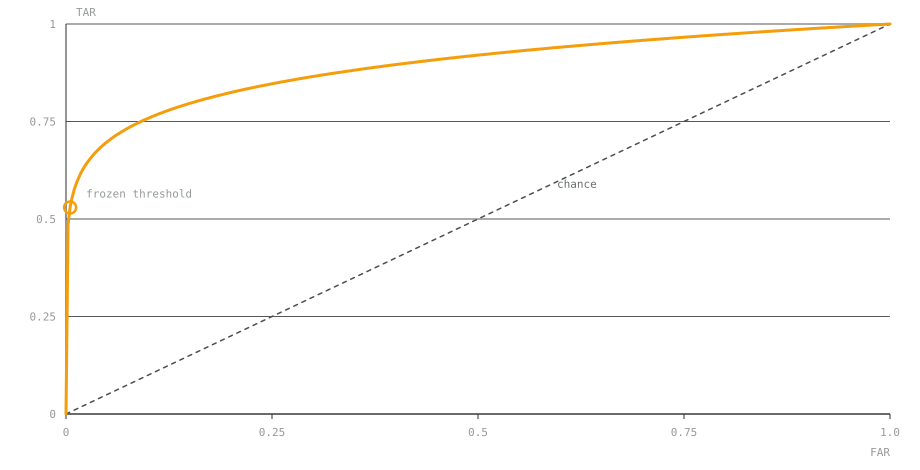
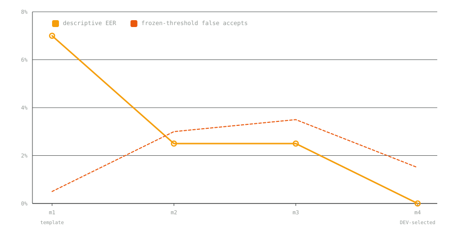
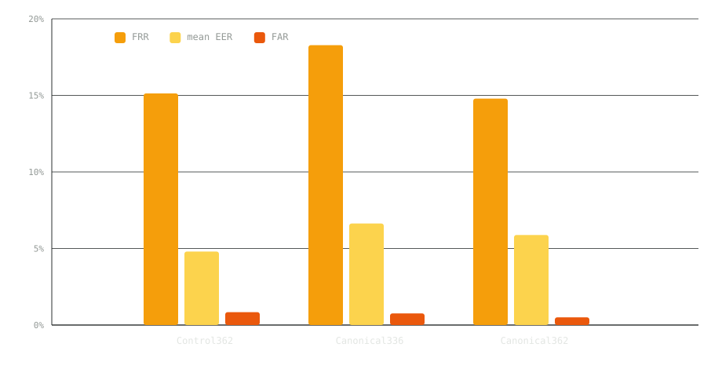
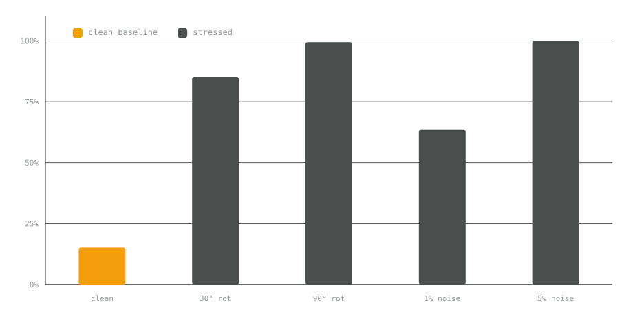
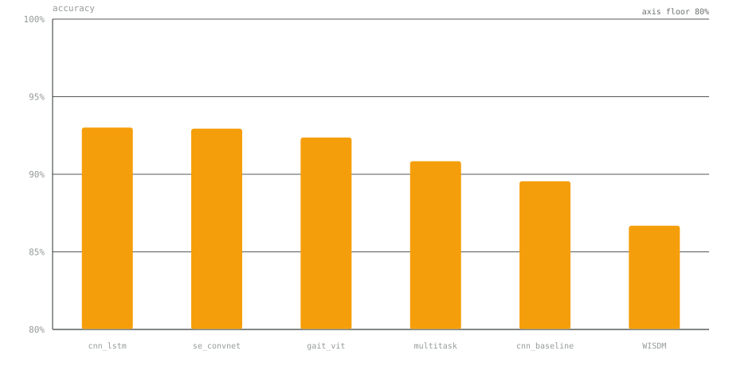
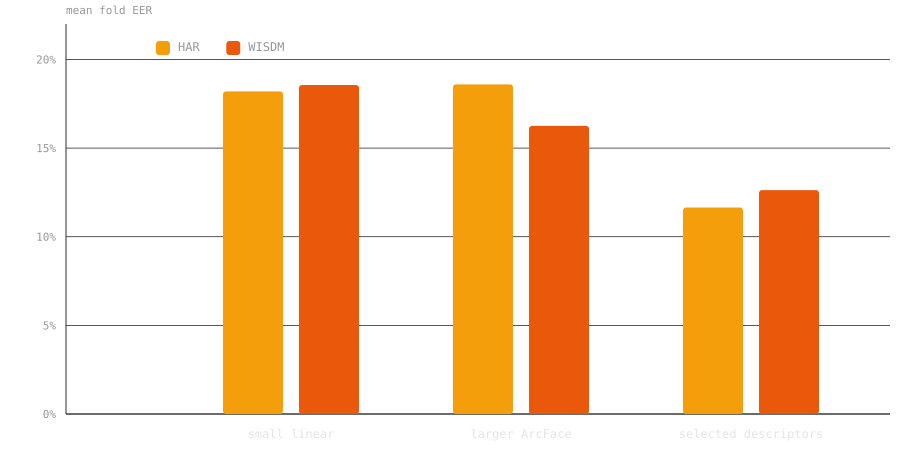
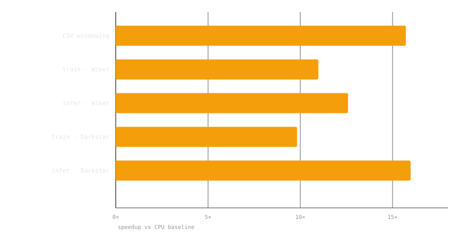

Gait Biometrics
- Passive user authentication from wearable and smartphone inertial gait signals
- IMU metric-learning baseline with paper-inspired classification and efficiency comparisons
- Built by Amaan (data pipeline), Aditya (deep learning) and Nimisha (evaluation)
- Mentored by Manjunath Hegde · MAHE
The idea in plain English
When you walk, your phone and watch feel the motion through their accelerometers and gyroscopes — tiny sensors that measure how you move. Your stride, your rhythm and your posture all leave a signature in that signal.
Gait authentication is the idea that this signature is personal enough to recognise you: instead of typing a password or pressing a fingerprint, the device just knows it is still you because it recognises how you move.
Metric learning collapsed the equal-error rate

Cross-day authentication

Four methods, one falling error line

Canonical orientation across three configurations

FRR under stress — the honest weak point

Activity classification on UCI HAR

Dev mean fold EER by method

Measured execution gains

Paper → implementation map
- B1 Dehzangi 2017 (Sensors) — multi-sensor fusion CNN
- B2 Chen 2020 (IMWUT) — METIER multi-task activity+user
- B3 Mekruksavanich & Jitpattanakul — DeepConvLSTM continuous auth
- B4 Sheng & Li 2020 (Neurocomputing) — Siamese denoising autoencoders
- B5–B7 — SE-ConvNet, edge gait (pruning/quantization/ONNX), SEGait-ConViT
How the work flowed
- Phase 1 — Amaan, data pipeline: UCI HAR + authentic WISDM AR v1.1, restored participant IDs, 128-sample windowing, frozen data/adapter.py contract
- Phase 2 — Aditya, deep learning: all 7 paper tracks (B1–B7), metric-learning extension drove WISDM EER 0.2010 → 0.0958, HAR 0.1764 → 0.1044
- Phase 3 — Nimisha, evaluation: EER/FAR/FRR semantics + ROC, cross-day Santos evaluation, calibration-frozen threshold, robustness tests
Where this leaves us
Passive gait authentication is promising — metric learning and canonical orientation both move the number — but orientation and noise fragility, and small evaluation sets, mean it is not yet usable for real authentication. The honest numbers are the deliverable.